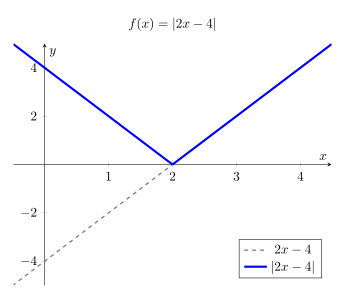
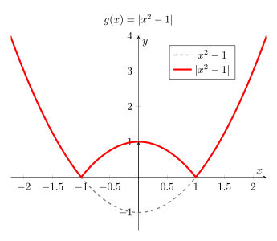

Expressió analítica de funcions en valor absolut
L'objectiu d'aquest apartat és aprendre a escriure una funció en valor absolut com una funció definida a trossos. Això és essencial per poder operar, derivar o representar la funció amb facilitat.
1. Recordant el concepte de valor absolut
El valor absolut d'una funció, \(|f(x)|\), ens indica que el resultat final ha de ser sempre positiu o zero.
Podem veure com funciona si avaluem una funció com \(f(x) = |x - 5|\) en diferents punts:
- Si \(x = 8\): \(f(8) = |8 - 5| = |3|=3\). Com que el resultat, sense valor absolut, és positiu, el deixem igual.
- Si \(x = 5\): \(f(5) = |5 - 5| = |0|=0\).
- Si \(x = 2\): \(f(2) = |2 - 5| = |-3|=3\). Com que el resultat, sense valor absolut, és negatiu, el valor absolut el fa positiu: \(-(-3) = \mathbf{3}\).
Per tant, el valor absolut actua com un operador condicional:
- Si per a un determinat \(x_0\) tenim que \(f(x_0)\geq 0\) tindrem que \(|f(x_0)|=f(x_0)\).
- En canvi, si per a un determinat \(x_0\) tenim que \(f(x_0)<0\), llavors \(|f(x_0)|=-f(x_0)\). Observem com el fet de multiplicar per \(-1\) fa que un valor negatiu es transformi en positiu.
2. Interpretació geomètrica: La simetria respecte l'eix OX
Ja hem estudiat que en fer \(-f(x)\) obtenim una funció simètrica respecte a l'eix \(OX\). En el cas d'una funció en valor absolut, el que farem serà aplicar el canvi \(-f(x)\) només en els casos en què la funció prengui valors negatius. Per representar gràficament una funció \(|f(x)|\), dibuixarem la gràfica de \(f(x)\) i farem una simetria respecte de \(OX\) de tots els intervals que estiguin per sota de zero.
3. Instruccions per obtenir la funció definida a trossos
Queda clar, doncs, que l'única dificultat per escriure la funció definida a trossos d'una funció en valor absolut, és determinar els intervals en què la funció és negativa o positiva.
Tot i que aquest procediment ja l'hem vist a l'apartat de càlcul de dominis, vegem-ho un cop més.
Per determinar els trossos d'una funció \(|f(x)|\), seguirem aquests tres passos:
- Trobar els zeros: Resolem l'equació \(f(x) = 0\). Aquests punts divideixen la recta real en diferents intervals.
- Estudiar el signe a cada interval: Utilitzarem una taula per determinar si la funció original és positiva o negativa en cada tram o interval.
- Definir la funció a trossos: Escriurem l'expressió final aplicant el canvi de signe només on la funció era negativa.
4. Exemples resolts
Exemple 1: Funció afí
Escriure a trossos la funció: \(f(x) = |2x - 4|\)
- Zeros: \(2x - 4 = 0 \implies x = 2\).
- Taula d'intervals i signes:
Interval Punt de prova \(f(x) = 2x - 4\) Signe Conclusió \((-\infty, 2)\) \(x = 0\) \(-4\) \(-\) Canviem signe: \(-(2x-4)\) \((2, +\infty)\) \(x = 3\) \(2\) \(+\) Deixem igual: \(2x-4\)
- Expressió definida a trossos:
\[f(x) = \begin{cases} -2x + 4 & \text{si } x < 2 \\ 2x - 4 & \text{si } x \geq 2 \end{cases}\]
- Gràfica:

Exemple 2: Funció quadràtica
Escriure a trossos la funció: \(g(x) = |x^2 - 1|\)
- Zeros: \(x^2 - 1 = 0 \implies x = \pm 1\).
- Taula d'intervals i signes:
Interval Punt de prova \(g(x) = x^2 - 1\) Signe Conclusió \((-\infty, -1)\) \(x = -2\) \(3\) \(+\) Deixem igual: \(x^2-1\) \((-1, 1)\) \(x = 0\) \(-1\) \(-\) Canviem signe: \(-x^2+1\) \((1, +\infty)\) \(x = 2\) \(3\) \(+\) Deixem igual: \(x^2-1\)
- Expressió definida a trossos:
\[g(x) = \begin{cases} x^2 - 1 & \text{si } x < -1 \\ -x^2 + 1 & \text{si } -1 \leq x < 1 \\ x^2 - 1 & \text{si } x \geq 1 \end{cases}\]
- Gràfica:
